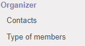
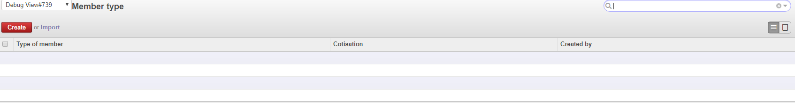
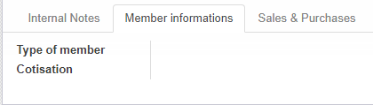

Add a menu to manage every type of members

The view looks like this

Add a page in the contact view to show the member's information

>
Languages
The module is available in english and french. If somebody want to translate in others language, give me the *.po file and I improve it